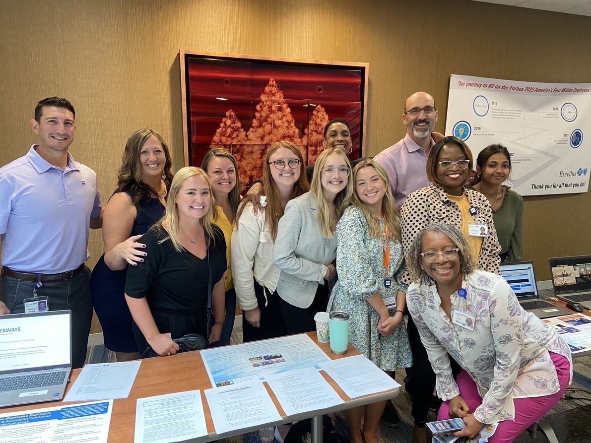
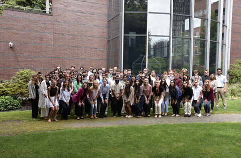
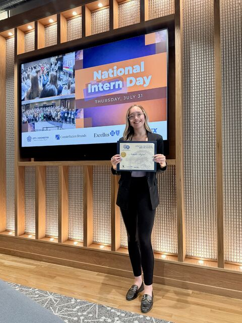
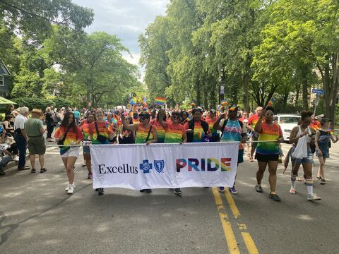

I care about research that impacts people: understanding what they need, testing what works, and communicating it clearly to non-specialists. I value work where behavioral science and quantitative methods meet real-world questions.
My applied research experience spans multiple settings. At Excellus BCBS, I did market research and consumer insights for a health plan serving 1.5M+ members, including a member loneliness initiative that became a 2025 strategic priority.

Started and led the survey design and analysis at Excellus BCBS. The loneliness study became a 2025 strategic priority.
Four studies on pharmacy experience, communication preferences, mobile app usage, and Gen-Z consumers, using surveys and focus groups.
An interactive Power BI dashboard, built from scratch, tracking broker satisfaction and Net Promoter Score.
Structural equation modeling (SEM), confirmatory factor analysis (CFA), mediation and moderation, longitudinal data analysis, regression, ANOVA, data mining, text mining
R/RStudio · Qualtrics · Jamovi · SPSS · GraphPad Prism · Prolific · Lyssna · GitHub · Microsoft Power BI & Excel
R (advanced: data analysis, visualization, HTML outputs, package development) · HTML (beginner) · Python (beginner)
Survey design, focus groups, segmentation, NPS and satisfaction tracking, data visualization, longitudinal data collection
Psychology, health research, market research, health and wellbeing marketing, loneliness and social connection, behavior change over time
Achiever · Learner · Discipline · Developer · Input


